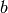

4.3. Clustering¶
Clustering of unlabeled data can be performed with the module sklearn.cluster.
Each clustering algorithm comes in two variants: a class, that implements the fit method to learn the clusters on train data, and a function, that, given train data, returns an array of integer labels corresponding to the different clusters. For the class, the labels over the training data can be found in the labels_ attribute.
Input data
One important thing to note is that the algorithms implemented in this module take different kinds of matrix as input. On one hand, MeanShift and KMeans take data matrices of shape [n_samples, n_features]. These can be obtained from the classes in the sklearn.feature_extraction module. On the other hand, AffinityPropagation and SpectralClustering take similarity matrices of shape [n_samples, n_samples]. These can be obtained from the functions in the sklearn.metrics.pairwise module. In other words, MeanShift and KMeans work with points in a vector space, whereas AffinityPropagation and SpectralClustering can work with arbitrary objects, as long as a similarity measure exists for such objects.
4.3.1. K-means¶
The KMeans algorithm clusters data by trying to separate samples in n groups of equal variance, minimizing a criterion known as the ‘inertia’ of the groups. This algorithm requires the number of cluster to be specified. It scales well to large number of samples, however its results may be dependent on an initialisation. As a result, the computation is often done several times, with different initialisation of the centroids.
K-means is often referred to as Lloyd’s algorithm. After initialization, k-means consists of looping between two major steps. First the Voronoi diagram of the points is calculated using the current centroids. Each segment in the Voronoi diagram becomes a separate cluster. Secondly, the centroids are updated to the mean of each segment. The algorithm then repeats this until a stopping criteria is fulfilled. Usually, as in this implementation, the algorithm stops when the relative increment in the results between iterations is less than the given tolerance value.
K-means can be used for vector quantization. This is achieved using the transform method of a trained model of KMeans.
Examples:
- A demo of K-Means clustering on the handwritten digits data: Clustering handwritten digits
4.3.1.1. Mini Batch K-Means¶
The MiniBatchKMeans is a variant of the K-Means algorithm using mini-batches, random subset of the dataset, to compute the centroids.
Althought the MiniBatchKMeans converge faster than the KMeans version, the quality of the results, measured by the inertia, the sum of the distance of each points to the nearest centroid, is not as good as the KMeans algorithm.
Examples:
- A demo of the K Means clustering algorithm: Comparison of KMeans and MiniBatchKMeans
- Clustering text documents using MiniBatchKmeans: Document clustering using sparse MiniBatchKMeans
References:
- “Web Scale K-Means clustering” D. Sculley, Proceedings of the 19th international conference on World wide web (2010)
4.3.2. Affinity propagation¶
AffinityPropagation clusters data by diffusion in the similarity matrix. This algorithm automatically sets its numbers of cluster. It will have difficulties scaling to thousands of samples.
Examples:
- Demo of affinity propagation clustering algorithm: Affinity Propagation on a synthetic 2D datasets with 3 classes.
- Finding structure in the stock market Affinity Propagation on Financial time series to find groups of companies
4.3.3. Mean Shift¶
MeanShift clusters data by estimating blobs in a smooth density of points matrix. This algorithm automatically sets its numbers of cluster. It will have difficulties scaling to thousands of samples.
Examples:
- A demo of the mean-shift clustering algorithm: Mean Shift clustering on a synthetic 2D datasets with 3 classes.
4.3.4. Spectral clustering¶
SpectralClustering does a low-dimension embedding of the affinity matrix between samples, followed by a KMeans in the low dimensional space. It is especially efficient if the affinity matrix is sparse and the pyamg module is installed. SpectralClustering requires the number of clusters to be specified. It works well for a small number of clusters but is not advised when using many clusters.
For two clusters, it solves a convex relaxation of the normalised cuts problem on the similarity graph: cutting the graph in two so that the weight of the edges cut is small compared to the weights in of edges inside each cluster. This criteria is especially interesting when working on images: graph vertices are pixels, and edges of the similarity graph are a function of the gradient of the image.
Examples:
- Spectral clustering for image segmentation: Segmenting objects from a noisy background using spectral clustering.
- Segmenting the picture of Lena in regions: Spectral clustering to split the image of lena in regions.
References:
- “A Tutorial on Spectral Clustering” Ulrike von Luxburg, 2007
- “Normalized cuts and image segmentation” Jianbo Shi, Jitendra Malik, 2000
- “A Random Walks View of Spectral Segmentation” Marina Meila, Jianbo Shi, 2001
- “On Spectral Clustering: Analysis and an algorithm” Andrew Y. Ng, Michael I. Jordan, Yair Weiss, 2001
4.3.5. Hierarchical clustering¶
Hierarchical clustering is a general family of clustering algorithms that build nested clusters by merging them successively. This hierarchy of clusters represented as a tree (or dendrogram). The root of the tree is the unique cluster that gathers all the samples, the leaves being the clusters with only one sample. See the Wikipedia page for more details.
The Ward object performs a hierarchical clustering based on the Ward algorithm, that is a variance-minimizing approach. At each step, it minimizes the sum of squared differences within all clusters (inertia criterion).
This algorithm can scale to large number of samples when it is used jointly with an connectivity matrix, but can be computationally expensive when no connectivity constraints are added between samples: it considers at each step all the possible merges.
4.3.5.1. Adding connectivity constraints¶
An interesting aspect of the Ward object is that connectivity constraints can be added to this algorithm (only adjacent clusters can be merged together), through an connectivity matrix that defines for each sample the neighboring samples following a given structure of the data. For instance, in the swiss-roll example below, the connectivity constraints forbid the merging of points that are not adjacent on the swiss roll, and thus avoid forming clusters that extend across overlapping folds of the roll.
The connectivity constraints are imposed via an connectivity matrix: a scipy sparse matrix that has elements only at the intersection of a row and a column with indices of the dataset that should be connected. This matrix can be constructed from apriori information, for instance if you whish to cluster web pages, but only merging pages with a link pointing from one to another. It can also be learned from the data, for instance using sklearn.neighbors.kneighbors_graph to restrict merging to nearest neighbors as in the swiss roll example, or using sklearn.feature_extraction.image.grid_to_graph to enable only merging of neighboring pixels on an image, as in the Lena example.
Examples:
- A demo of structured Ward hierarchical clustering on Lena image: Ward clustering to split the image of lena in regions.
- Hierarchical clustering: structured vs unstructured ward: Example of Ward algorithm on a swiss-roll, comparison of structured approaches versus unstructured approaches.
- Feature agglomeration vs. univariate selection: Example of dimensionality reduction with feature agglomeration based on Ward hierarchical clustering.
4.3.6. DBSCAN¶
The DBSCAN algorithm clusters data by finding core points which have many neighbours within a given radius. After a core point is found, the cluster is expanded by adding its neighbours to the current cluster and recusively checking if any are core points. Formally, a point is considered a core point if it has more than min_points points which are of a similarity greater than the given threshold eps. This is shown in the figure below, where the color indicates cluster membership and large circles indicate core points found by the algorithm. Moreover, the algorithm can detect outliers, indicated by black points below.
Examples:
- Demo of DBSCAN clustering algorithm: Clustering synthetic data with DBSCAN
References:
- “A Density-Based Algorithm for Discovering Clusters in Large Spatial Databases with Noise” Ester, M., H. P. Kriegel, J. Sander, and X. Xu, In Proceedings of the 2nd International Conference on Knowledge Discovery and Data Mining, Portland, OR, AAAI Press, pp. 226–231. 1996
4.3.7. Clustering performance evaluation¶
Evaluating the performance of a clustering algorithm is not as trivial as counting the number of errors or the precision and recall of a supervised classification algorithm. In particular any evaluation metric should not take the absolute values of the cluster labels into account but rather if this clustering define separations of the data similar to some ground truth set of classes or satisfying some assumption such that members belong to the same class are more similar that members of different classes according to some similarity metric.
4.3.7.1. Inertia¶
4.3.7.1.1. Presentation and usage¶
TODO: factorize inertia computation out of kmeans and then write me!
4.3.7.1.2. Advantages¶
- No need for the ground truth knowledge of the “real” classes.
4.3.7.1.3. Drawbacks¶
- Inertia makes the assumption that clusters are convex and isotropic which is not always the case especially of the clusters are manifolds with weird shapes: for instance inertia is a useless metrics to evaluate clustering algorithm that tries to identify nested circles on a 2D plane.
- Inertia is not a normalized metrics: we just know that lower values are better and bounded by zero. One potential solution would be to adjust inertia for random clustering (assuming the number of ground truth classes is known).
4.3.7.2. Ajusted Rand index¶
4.3.7.2.1. Presentation and usage¶
Given the knowledge of the ground truth class assignments labels_true and our clustering algorithm assignments of the same samples labels_pred, the adjusted Rand index is a function that measures the similarity of the two assignements, ignoring permutations and with chance normalization:
>>> from sklearn import metrics
>>> labels_true = [0, 0, 0, 1, 1, 1]
>>> labels_pred = [0, 0, 1, 1, 2, 2]
>>> metrics.adjusted_rand_score(labels_true, labels_pred)
0.24...
One can permute 0 and 1 in the predicted labels and rename 2 by 3 and get the same score:
>>> labels_pred = [1, 1, 0, 0, 3, 3]
>>> metrics.adjusted_rand_score(labels_true, labels_pred)
0.24...
Furthermore, adjusted_rand_score is symmetric: swapping the argument does not change the score. It can thus be used as a consensus measure:
>>> metrics.adjusted_rand_score(labels_pred, labels_true)
0.24...
Perfect labeling is scored 1.0:
>>> labels_pred = labels_true[:]
>>> metrics.adjusted_rand_score(labels_true, labels_pred)
1.0
Bad (e.g. independent labelings) have negative or close to 0.0 scores:
>>> labels_true = [0, 1, 2, 0, 3, 4, 5, 1]
>>> labels_pred = [1, 1, 0, 0, 2, 2, 2, 2]
>>> metrics.adjusted_rand_score(labels_true, labels_pred)
-0.12...
4.3.7.2.2. Advantages¶
- Random (uniform) label assignements have a ARI score close to 0.0 for any value of n_clusters and n_samples (which is not the case for raw Rand index or the V-measure for instance).
- Bounded range [-1, 1]: negative values are bad (independent labelings), similar clusterings have a positve ARI, 1.0 is the perfect match score.
- No assumption is made on the cluster structure: can be used to compare clustering algorithms such as k-means which assumes isotropic blob shapes with results of spectral clustering algorithms which can find cluster with “folded” shapes.
4.3.7.2.3. Drawbacks¶
Contrary to inertia, ARI requires the knowlege of the ground truth classes while almost never available in practice or requires manual assignment by human annotators (as in the supervised learning setting).
However ARI can also be useful in purely unsupervised setting as a building block for a Consensus Index that can be used for clustering model selection (TODO).
Examples:
- Adjustment for chance in clustering performance evaluation: Analysis of the impact of the dataset size on the value of clustering measures for random assignements.
4.3.7.2.4. Mathematical formulation¶
If C is a ground truth class assignement and K the clustering, let us define and  as:
- , the number of pairs of elements that are in the same set in C and in the same set in K
- , the number of pairs of elements that are in different sets in C and in different sets in K
The raw (unadjusted) Rand index is then given by:

Where is the total number of possible pairs in the dataset (without ordering).
However the RI score does not guarantee that random label assignements will get a value close to zero (esp. if the number of clusters is in the same order of magnitude as the number of samples).
To counter this effect we can discount the expected RI of random labelings by defining the adjusted Rand index as follows:
References
- Comparing Partitions L. Hubert and P. Arabie, Journal of Classification 1985
- Wikipedia entry for the adjusted Rand index
4.3.7.3. Homogeneity, completeness and V-measure¶
4.3.7.3.1. Presentation and usage¶
Given the knowledge of the ground truth class assignments of the samples, it is possible to define some intuitive metric using conditional entropy analysis.
In particular Rosenberg and Hirschberg (2007) define the following two desirable objectives for any cluster assignment:
- homogeneity: each cluster contains only members of a single class.
- completeness: all members of a given class are assigned to the same cluster.
We can turn those concept as scores homogeneity_score and completeness_score. Both are bounded below by 0.0 and above by 1.0 (higher is better):
>>> from sklearn import metrics
>>> labels_true = [0, 0, 0, 1, 1, 1]
>>> labels_pred = [0, 0, 1, 1, 2, 2]
>>> metrics.homogeneity_score(labels_true, labels_pred)
0.66...
>>> metrics.completeness_score(labels_true, labels_pred)
0.42...
Their harmonic mean called V-measure is computed by v_measure_score:
>>> metrics.v_measure_score(labels_true, labels_pred)
0.51...
All three metrics can be computed at once using homogeneity_completeness_v_measure as follows:
>>> metrics.homogeneity_completeness_v_measure(labels_true, labels_pred)
...
(0.66..., 0.42..., 0.51...)
The following clustering assignment is slighlty better, since it is homogeneous but not complete:
>>> labels_pred = [0, 0, 0, 1, 2, 2]
>>> metrics.homogeneity_completeness_v_measure(labels_true, labels_pred)
...
(1.0, 0.68..., 0.81...)
Note
v_measure_score is symmetric: it can be used to evaluate the agreement of two independent assignements on the same dataset.
This is not the case for completeness_score and homogeneity_score: both are bound by the relationship:
homogeneity_score(a, b) == completeness_score(b, a)
4.3.7.3.2. Advantages¶
- Bounded scores: 0.0 is as bad as it can be, 1.0 is a perfect score
- Intuitive interpretation: clustering with bad V-measure can be qualitatively analyzed in terms of homogeneity and completeness to better feel what ‘kind’ of mistakes is done by the assigmenent.
- No assumption is made on the cluster structure: can be used to compare clustering algorithms such as k-means which assumes isotropic blob shapes with results of spectral clustering algorithms which can find cluster with “folded” shapes.
4.3.7.3.3. Drawbacks¶
The previously introduced metrics are not normalized w.r.t. random labeling: this means that depending on the number of samples, clusters and ground truth classes, a completely random labeling will not always yield the same values for homogeneity, completeness and hence v-measure. In particular random labeling won’t yield zero scores especially when the number of clusters is large.
This problem can safely be ignored when the number of samples is more than a thousand and the number of clusters is less than 10. For smaller sample sizes or larger number of clusters it is safer to use an adjusted index such as the Adjusted Rand Index (ARI).
- These metrics require the knowlege of the ground truth classes while almost never available in practice or requires manual assignment by human annotators (as in the supervised learning setting).
Examples:
- Adjustment for chance in clustering performance evaluation: Analysis of the impact of the dataset size on the value of clustering measures for random assignements.
4.3.7.3.4. Mathematical formulation¶
Homogeneity and completeness scores are formally given by:
where is the conditional entropy of the classes given the cluster assignments and is given by:
and is the entropy of the classes and is given by:
with the total number of samples, and the number of samples respectively belonging to class and cluster , and finally the number of samples from class assigned to cluster .
The conditional entropy of clusters given class and the entropy of clusters are defined in a symmetric manner.
Rosenberg and Hirschberg further define V-measure as the harmonic mean of homogeneity and completeness:
References
- V-Measure: A conditional entropy-based external cluster evaluation measure Andrew Rosenberg and Julia Hirschberg, 2007